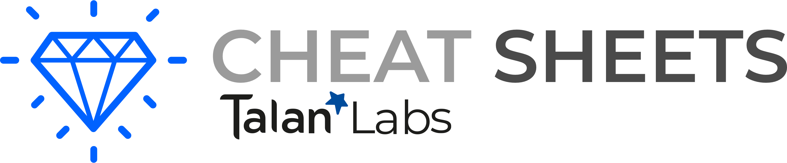
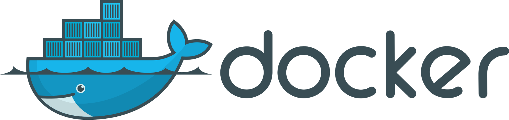

|

|
Docker CommandGeneral UsageStart a container in Background
Start an interactive container
Start a container and remove once stopped
Expose a port from the container on the host
Start a named container
Stop a running container
Start a stoped container
DebugRun a shell command in a running container
Follow logs of a running container
Show open port of container
|
Building ImagesBuild an image from a Dockerfile in same dir
Force rebuild an image
Create an image from a container
Remove an image
Container ManagementList running container
List all container
Inspect container Metadata
List local images
Kill all container
Remove all stopped container
Removing all untagged image
|
VolumesMounting a local Directory on a container
Create a local volume
Mounting a volume on a container
Destroy a volume
List volumes
NetworkCreate a local Network
Attach a container to a Network on startup
Connect a running container to a network
Disconnect a running container to a network
|
docker-compose.yml
|
|||||||||||||||||||||||||||||||||||||
Dockerfile
|
|
|||||||||||||||||||||||||||||||||||||||
|
|
|||||||||||||||||||
|
|